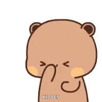

Be my date miss baby?
There's something DIFFERENT about you… so I made this.
P.S. JUST click that yes you know... 😉
Step 1 of 4
What kind of date are we having madam? 💘
Pick one, Mi Lady.
Step 2 of 4
Bet! What day should it be? 📅
Reserve the date for me, please Madam.

Step 3 of 4
What time should I pick you up? ⏰
Dinner, sunset, or midnight snacks — your call!
Step 4 of 4
And what food will we devour? 🍽️
Choose wisely… your taste buds decide.
Yayyy! I can't wait! 💫
Here's our perfect plan…
Our date
—
The day
—
The time
—
Our food
—

Thank you for saying yes,
I love you ❤️